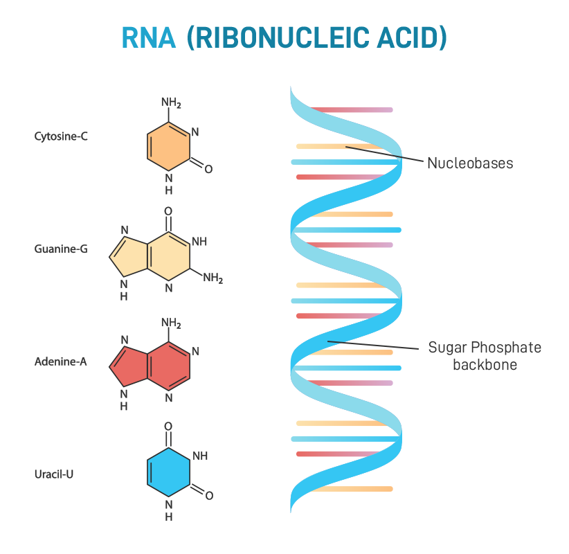
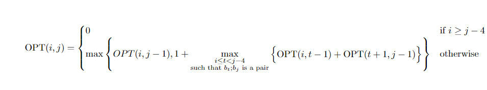
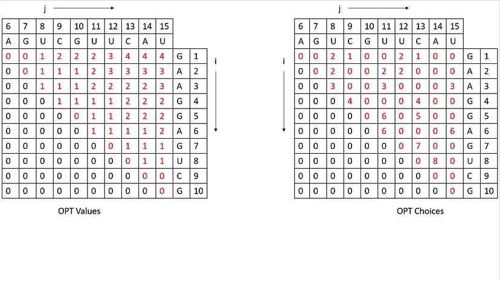
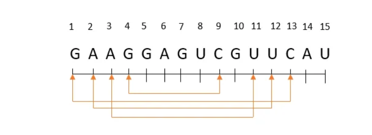

RNA secondary structure prediction
Background
RNA
like DNA, is a type of nucleic acid, but it consists of a single
helical strand of bases. Its primary function is to translate the
genetic instructions stored in DNA into functional proteins. RNA
molecules have intricate secondary structures that govern their
behavior.
Several rules dictate how these secondary structures form:
-
Bases in the RNA molecule pair up, with each base pairing with at
most one other base.
-
Adenine(A) always pairs with
Uracil(U), and
Cytosine(C) always pairs with
Guanine
(G), and vice versa.
-
The RNA molecule's structure should be smooth, without any sharp
bends.
- The structure must be free of knots.
The goal when analyzing an RNA molecule is to predict its secondary
structure based on these rules.

An RNA molecule can be represented by a string B =
b1b2...bn, where each character bi
∈ { A, C, G, U }.
A secondary structure on B is a set of pairs S = { (i, j)... }, where 1
≤ i, j ≤ n, satisfying the following rules:
-
No sharp turns: The ends of each pair are separated by
at least some number of intervening bases i.e. if (i, j) ∈ S, then
i < j - 4.
-
Complementary base pairs: The elements in each pair in
S consist of either {A,U} or {C,G} (in either order).
-
S is a Matching: No base appears in more than one pair.
-
No knots: If (i,j) ∈ S and (k,l) ∈ S, then we
cannot have i < k < j < l.
Thus the problem boils down to finding a
maximum matching
of {A,U} or {C,G} base pairs without knots or sharp turns.
Dynamic Programming solution
Let OPT(i,j) denote the maximum possible pairs between
bi...bj
Then the recurrence relation can be written as follows:

The maximum possible pairs between b1...bn will be
in OPT(1,n)
Discussion on the Algorithm
The DP solution only gives the maximum possible pairings according to the
rules. To actually find the pairs, we need to create one more table.
We create two tables:
- Optimum Value Table: The table which follows the DP solution.
-
Optimum Choice Table: The table which helps us in deciding what bases to
pair to get the optimum value.
Table filling:
- Optimum Value Table: follow the DP solution to fill the cells.
-
Optimum Choice Table for a given (row,col):
- If the bases cannot pair then the choice[row][col] = 0.
-
If the bases can pair & if proceeding logic according to our code is
satisfied, choice[row][col] = t+1.
Example: GAAGGAGUCGUUCAU

In the above example, the maximum possible pairs is stored in
values[1][15].
Now to find the pairs which result in maximum number, we have to look at
choices table:
-
We start with the biggest subproblem by defining two variables left = 1
& right = 15
- We start from top right cell i.e. choice[1][15]
-
We also create a queue to store which subproblems are to be evaluated.
-
Suppose for any cell choice[left][right]:
-
If choice[left][right] = 0, add {left,right-1} to the queue, since
there is no pairing possible with the current base pair.
-
Else we have found one pairing which is
(choice[left][right],right+1):
-
Now we evaluate the internal subproblem (if possible) by adding
{mapped[left][right],right-1} into the queue.
-
We also evaluate the left subproblem (if possible) by adding
{left,mapped[left][right]-2} to the queue.
-
Evaluating both these subproblems ensure we capture the correct base
pairings.
According to this logic, we get {1,13},{2,12},{3,11},{4,9} as the 4
maximum possible pairings.

Timing Analysis
Each state takes O(r-l) time to compute and there are O(n2)
states. Hence the time complexity of computing all the dp states is
O(n3).
Also, since there are O(n2) dp states which must be stored in
memory, the space complexity is O(n2).
Issues In Coding
Since the pseudocode does not take into consideration the constraints of
programming languages, we had to modify the second recursive
relationship for the case when i=t=0. Since, accessing a negative index
in an array [OPT[i][t-1] => OPT[0][-1]] yields errors in C++, we handled
it by directly replacing the term OPT[i][t-1] with zero when B[t] is
Complementary to B[j] and t=0.
Visualization
Homo sapiens (human) XIST RNA A repeat URS0000699BD2_9606
Homo sapiens (human) microRNA 320d-1 (ENSG00000211491.2)
Mus musculus (house mouse) mmu-miR-3074-5p URS000054204A_10090
hp1x-RNA (29-MER) from Homo sapiens (PDB 6DU4, chain B)
Danio rerio (zebrafish) snRNA BX323006.1 (ENSDARG00000099341.2)
Key Reasons For Difference
-
RNAs' structure is media-dependent. Through our algorithm we just get
a RNA structure independent of internal and external interferences. At
the same time the images of the RNA secondary structure from RNA
Central are subject to the state most viable for experimental imagery.
For example, X-ray crystallography required the RNA to be in a crystal
form, whereas NMR has media-specific requirements for imaging, which
may coerce the RNA to take up a different shape.
-
While base-pairing leads to a more stable RNA structure in theory, it
need not be the structure with the least free energy, which guides RNA
folding. For structures (in vivo), which don't have the conformation
with the least thermodynamic stability, they are often guided by
chaperones over a energy path that leads them to a local minima in the
energy landscape, thus leading to a biological-relevant stable
structure. Another factor would also be post-transcriptional
modifications, for tertiary/quaternary interactions with proteins,
which would further block certain centers from base-pairing.
-
Base-Base stacking is often the main reason behind the existence of
stretches of single-stranded RNA, leading to the formation of tails,
bulges and loops which could have otherwise been involved in
base-pairing.
References
-
Finding Secondary Structure of RNA using Dynamic Programming over
intervals
-
2-D Dynamic Programming (Algorithms 16)